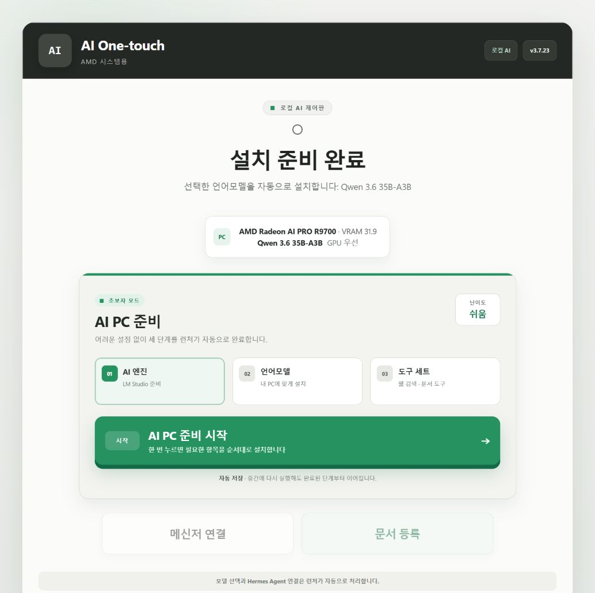
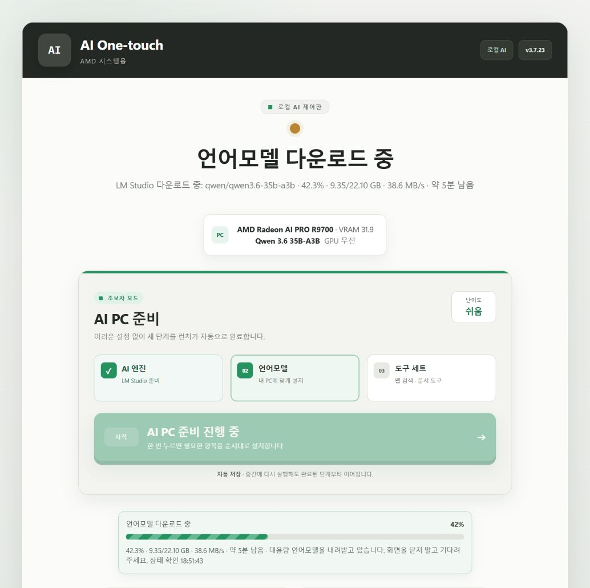
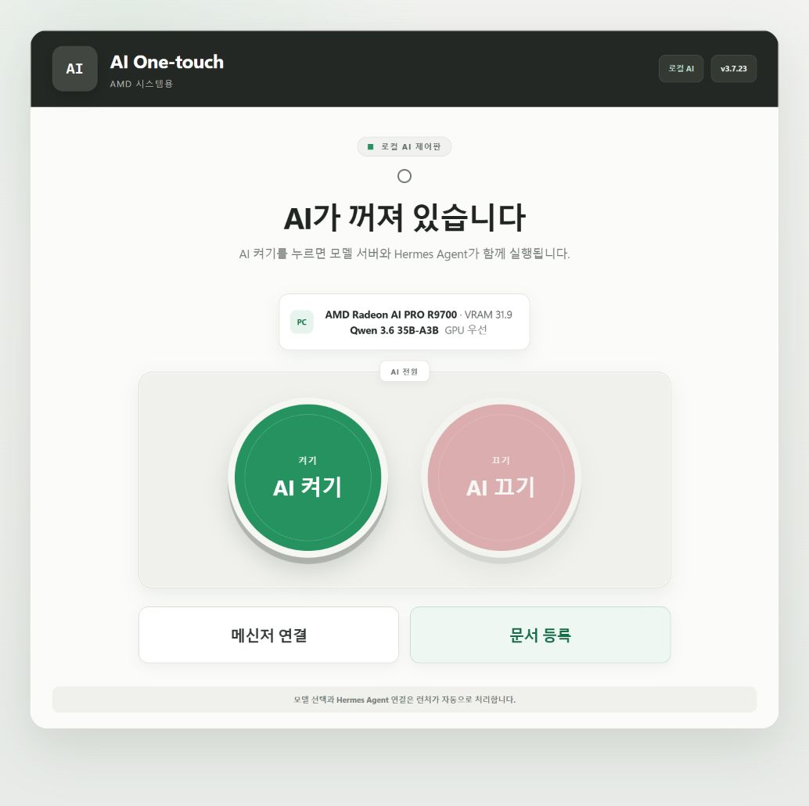
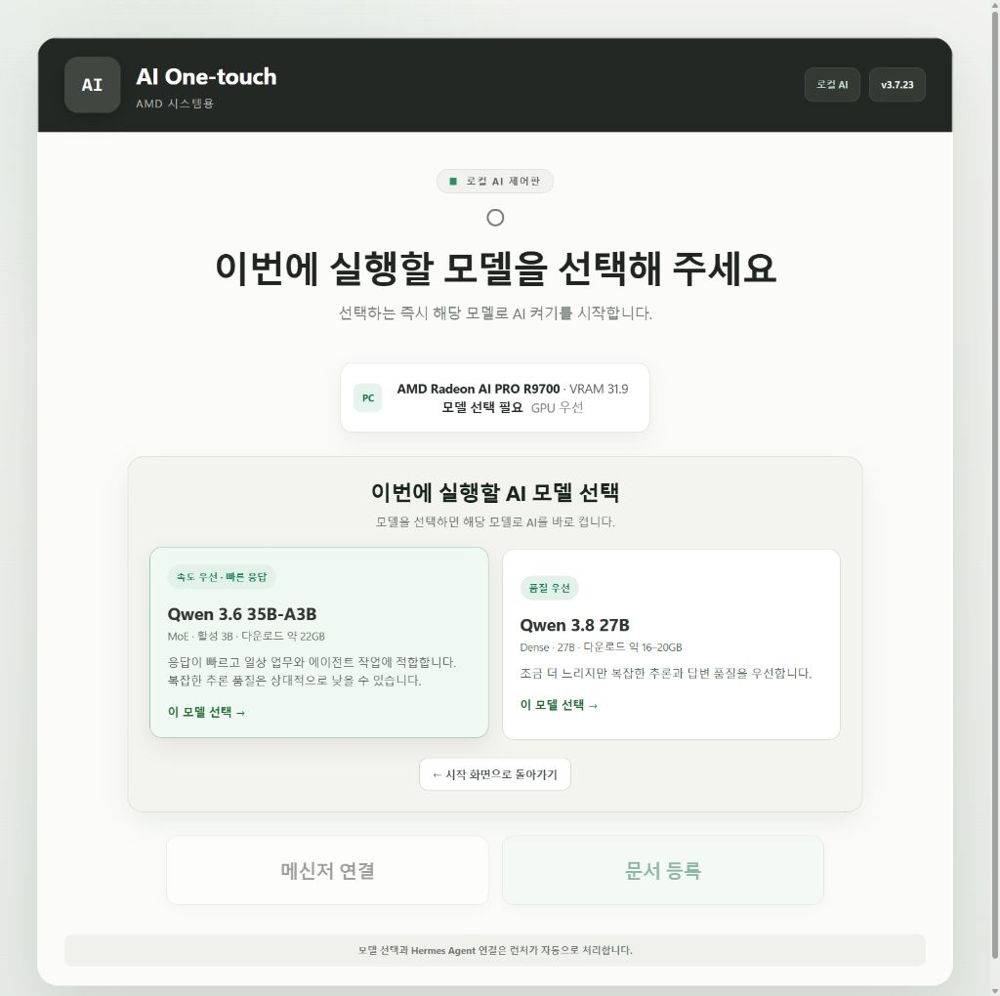
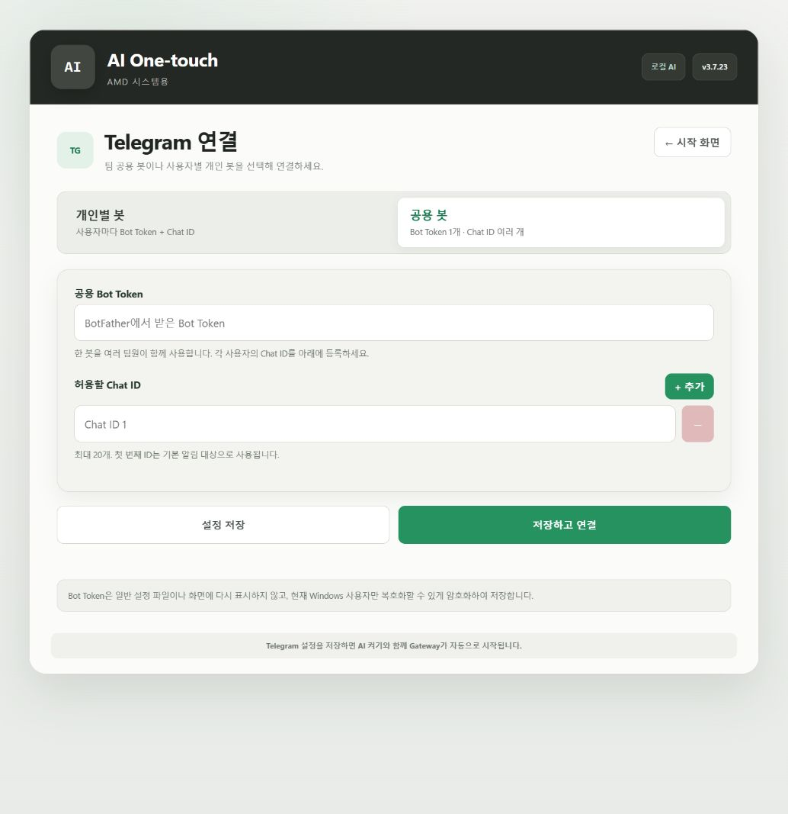
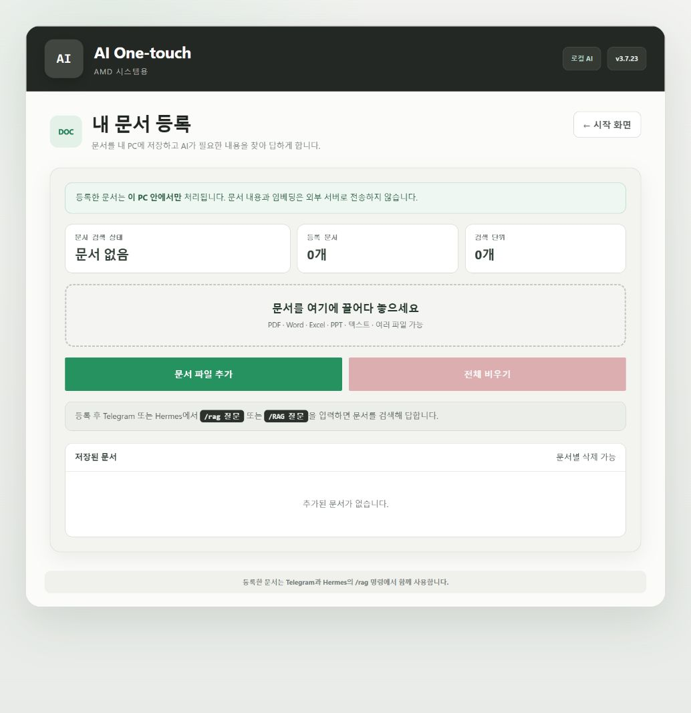

처음이라도 괜찮습니다화면에 표시되는 초록색 버튼을 순서대로 누르면 런처가 모델과 도구를 자동으로 준비합니다.
압축은 반드시 모두 풀기ZIP 안에서 바로 실행하지 말고 새 폴더에 압축을 완전히 푼 다음 설치 파일을 실행하세요.
STEP 01
압축 풀기 → 설치 → 실행
배포 ZIP을 폴더에 완전히 푼 뒤 아래 순서대로 진행합니다.
11_Install_AI_OneTouch_Beginner_Internal.bat마우스 오른쪽 → 관리자 권한으로 실행합니다. 인증서 신뢰와 MSIX 설치를 자동으로 진행합니다.
PC바탕화면 → AI One-touch Beginner설치 BAT가 바탕화면 바로가기를 자동으로 만듭니다. 아이콘을 더블 클릭하면 런처가 실행됩니다.
APP시작 메뉴 → AI One-touch Beginner바탕화면 아이콘이 보이지 않을 때 사용할 수 있는 실행 방법입니다.
GOAI PC 준비 시작처음 실행한 PC에서는 이 버튼을 한 번 누릅니다. LM Studio, 모델, Hermes와 기본 도구를 순서대로 준비합니다.

처음 실행하면 AI PC 준비 화면이 나타납니다. 초록색 AI PC 준비 시작을 한 번 누르면 됩니다.
이미 설치했던 PC: 새 배포본의 설치 BAT을 다시 실행하면 앱은 업데이트되고 바탕화면 바로가기도 자동으로 생성됩니다. 제거 BAT을 실행하면 바로가기도 함께 삭제됩니다.
첫 설치는 오래 걸릴 수 있습니다. 모델 크기가 약 16~22GB이므로 인터넷 속도에 따라 수십 분 이상 걸릴 수 있습니다. 진행 중에는 창을 닫지 마세요.

언어모델 다운로드 중, 내려받은 용량·전체 용량·속도·남은 시간·마지막 상태 확인 시간이 표시됩니다. 줄무늬 진행 막대가 움직이고 상태 확인 시간이 갱신되면 멈춘 것이 아닙니다.
다운로드가 정상인지 확인하는 법: 화면에 정상 진행 중 또는 퍼센트가 보이고 상태 확인 시간이 계속 바뀌면 정상입니다. 오류 문구가 나오지 않았다면 모델이 큰 것이므로 기다려 주세요.
STEP 02
메인 화면에서 AI 켜기
설치가 끝나면 아래와 같은 전원 화면이 표시됩니다. 초록색 AI 켜기 버튼을 누르세요.

① 초록색 AI 켜기 · ② 메신저 연결 · ③ 문서 등록
AI 켜기모델 서버와 Hermes를 실행합니다.
AI 끄기모델 서버와 메신저 Gateway를 종료합니다.
뒤로가기메신저·문서 화면에서 마우스 뒤로가기 버튼도 사용할 수 있습니다.
실행할 모델 선택
AI 켜기를 누르면 PC의 GPU 메모리에 맞는 두 모델이 표시됩니다. 16GB GPU에서는 빠른 응답용 Gemma 4 12B와 답변 품질 우선 Gemma 4 26B A4B IT QAT 중에서 고를 수 있습니다. 32GB급 GPU에서는 빠른 응답용 Qwen 3.6 35B-A3B와 답변 품질 우선 Qwen 3.8 27B 중에서 고를 수 있습니다.

표시되는 모델은 GPU 메모리에 따라 달라집니다. 모델 카드를 누르는 즉시 AI 시작 작업이 진행됩니다.
권장: 잘 모르겠다면 기본 추천 모델을 선택하세요. 상태 문구가 AI가 켜져 있습니다로 바뀌면 준비 완료입니다.
언어모델을 바꿀 때: 먼저 AI 끄기 → 모델 선택 및 저장 → AI 다시 켜기 순서로 진행하세요. AI가 실행 중일 때 모델 설정을 바꾸지 마세요.
STEP 03
메신저 연결
메인 화면의 메신저 연결을 누르면 공용 Telegram 봇 또는 개인별 봇을 등록할 수 있습니다.

공용 봇은 Bot Token 1개와 여러 Chat ID, 개인별 봇은 사용자마다 별도 Token과 Chat ID를 사용합니다.
- BotFather에서 발급받은 Bot Token을 입력합니다.
- 허용할 Telegram Chat ID를 입력합니다.
- 설정 저장 또는 저장하고 연결을 누릅니다.
- AI를 켜면 Telegram Gateway도 함께 시작됩니다.
Bot Token과 사용자 ID 확인하기
- Telegram 검색창에서 인증 표시가 있는 BotFather를 열고 /newbot을 입력합니다.
- 봇 이름을 정한 뒤, 마지막이 _bot으로 끝나는 사용자 이름을 입력합니다. 발급된 HTTP API Token이 런처의 Bot Token입니다.
- 검색창에서 User Info · Get ID · IDbot과 같은 사용자 ID 확인 봇을 열고 /start를 보냅니다.
- 응답에 표시된 숫자 Id를 복사해 런처의 Chat ID에 입력합니다. 개인 대화에서는 이 사용자 ID가 Chat ID로 사용됩니다.

왼쪽: BotFather의 Bot Token 발급 위치 · 오른쪽: 사용자 ID 확인 봇의 숫자 Id 위치
중요: Bot Token은 비밀번호와 같습니다. 다른 사람에게 보내거나 공개 게시물에 올리지 마세요. ID 확인 봇에는 개인 문서나 민감한 메시지를 전달하지 말고 /start만 사용하세요. 그룹 Chat ID는 개인 사용자 ID와 다릅니다.
저장된 Bot Token은 화면에 다시 표시되지 않으며 현재 Windows 사용자만 복호화할 수 있도록 암호화해 저장합니다.
STEP 04
문서 등록
메인 화면의 문서 등록을 누른 뒤, 문서를 점선 영역으로 끌어다 놓습니다. 기존처럼 문서 파일 추가를 눌러 선택해도 됩니다.

문서 수와 청크 수를 확인하고, 문서별 삭제 또는 전체 비우기를 사용할 수 있습니다.
여러 파일 드롭여러 문서를 한꺼번에 끌어다 놓을 수 있습니다. 파일당 50MB, 한 번에 200MB까지 지원합니다.
지원 문서PDF, Word, PowerPoint, Excel, CSV, TXT, Markdown, JSON 등
중복 방지같은 문서는 파일 해시로 확인해 중복 등록을 건너뜁니다.
로컬 처리문서와 임베딩은 이 PC의 RAG 저장소에 보관됩니다.
문서 등록 중에는 AI를 켜 둡니다. 문서를 읽고 청크와 임베딩을 만들기 때문에 큰 문서는 시간이 걸릴 수 있습니다.
STEP 05
Telegram 또는 Hermes에서 문서 질문
문서 등록이 끝난 뒤 Telegram이나 Hermes Desktop 대화창에서 아래처럼 입력합니다. 대문자와 소문자를 모두 지원합니다.
/rag 원장에서 R9700 대여 현황을 알려줘등록된 문서에서 관련 근거를 찾아 답합니다.
/RAG 계약서의 납기일과 위약금을 표로 정리해줘/RAG처럼 대문자로 입력해도 동일하게 작동합니다.
/rag 이 문서의 핵심 결론과 근거 페이지를 알려줘질문을 구체적으로 쓰면 검색 정확도가 좋아집니다.
/ragadd C:\문서\자료.pdf고급 사용자는 Hermes Desktop에서 파일 경로로 문서를 추가할 수도 있습니다.
일반 질문과 구분: 문서를 검색해야 하는 질문은 반드시 앞에 /rag를 붙이세요. RAG 답변에는 검색과 근거 검사가 포함되어 일반 대화보다 오래 걸릴 수 있습니다.
STEP 06
문제가 생겼을 때 직접 해결하기
앱이 열리지 않음
Windows를 재부팅하고 바탕화면 바로가기로 다시 실행합니다. 계속 안 열리면 새 ZIP을 새 폴더에 완전히 푼 뒤 설치 BAT을 관리자 권한으로 다시 실행하세요.
모델 다운로드가 느림
파일이 16~22GB로 큽니다. 진행 막대가 움직이거나 상태 확인 시간이 갱신되면 정상입니다. VPN을 끄고 유선 인터넷을 권장하며, 중단 후 다시 실행하면 이어받기를 시도합니다.
/rag 답변이 없음
AI가 켜져 있는지, 문서 수가 1개 이상인지, 질문 앞에 /rag를 붙였는지 확인합니다.
새 PC처럼 다시 시작
위 방법으로 해결되지 않으면 Reset_Tool_LMStudio.exe로 초기화한 뒤 설치 BAT을 다시 실행합니다. 더 이상 사용하지 않을 때만 제거 BAT을 실행하세요.
위 순서대로 재시도·재설치·초기화를 진행하면 사용자가 직접 복구할 수 있습니다.